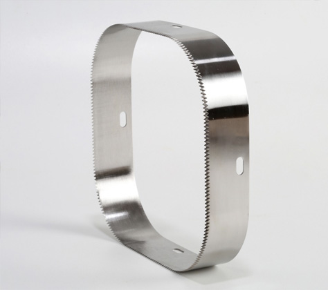

Крім того, наші інженери надають можливість виготовлення різних варіантів ножів для зварювачів лотків за
ескізами або власними кресленнями замовника. У такому разі важливо отримати всі необхідні розміри, уточнити
майбутню форму ножів та інші необхідні технічні особливості.
Які матеріали використовують при виготовленні ножів

Більшість стандартних ножів виготовляються із спеціальної швидкоріжучої сталі. Саме цей матеріал забезпечує
максимальну продуктивність та тривалу експлуатацію ріжучих інструментів в обладнанні.
Але за рахунок активного розвитку цієї галузі, на сьогодні відомо безліч не менш актуальних та якісних видів
матеріалів, які також знайшли своє застосування у сфері розробки ножів для сучасної промисловості. До цього
списку входять такі різновиди:
- інструментальна штампова сталь;
- конструкційна підшипникова сталь;
- інструментальна вуглецева сталь;
- нержавіюча сталь або, як її часто називають, «нержавійка»;
- інструментальна легована сталь;
- а також інструментальна швидкоріжуча сталь.
Вартість розробки цих видів залежить від обраної сировини, тому замовник повинен уважно ознайомитися із
запропонованим списком основних різновидів сталі. З іншого боку, беруться до уваги майбутні експлуатаційні
умови, у яких може експлуатуватися той чи інший готовий інструмент нарізки.